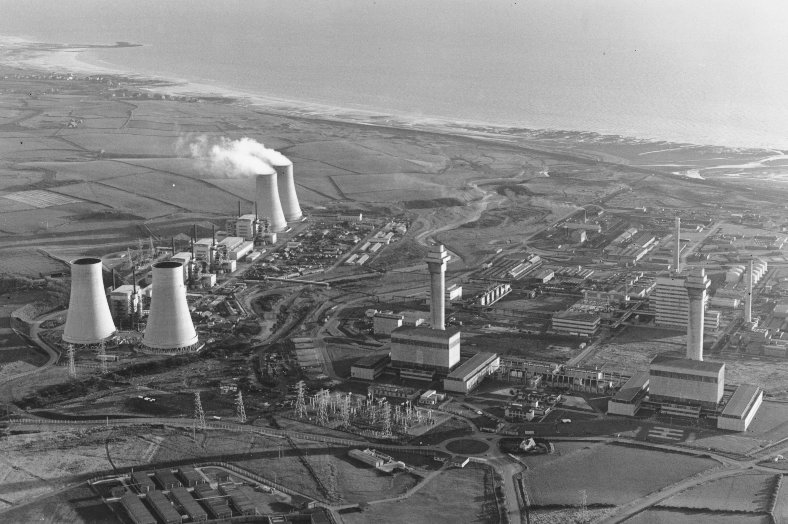

The Windscale Fire
A Dangerous Procedure: In the years following World War II, the British government rushed to develop its own nuclear weapons program, constructing two massive, air-cooled, graphite-moderated reactors at the Windscale facility in Cumbria, England. On October 8, 1957, operators at Windscale Pile No. 1 initiated a routine maintenance procedure known as "annealing." This process involved heating the graphite core to release pent-up energy (Wigner energy) that accumulated during normal operations. However, due to inadequate temperature monitoring equipment and a fundamental flaw in the reactor's design, the operators failed to realize that the core was getting dangerously hot. By October 10, the uranium fuel cartridges had ruptured, and the graphite itself caught fire. The core burned fiercely for three days, reaching temperatures of over 1,300°C. Because the reactor was air-cooled, the massive fans blowing through the core fed oxygen directly to the flames and pushed the highly radioactive smoke up the exhaust stacks.

While the filters at the top of the stacks caught some debris, they could not trap the gaseous radioactive isotopes—most notably Iodine-131—which escaped into the atmosphere and drifted across the UK and into Northern Europe. Desperate to stop the fire and fearing a catastrophic meltdown, the operators took the massive gamble of flooding the superheated core with water.
While this risked a devastating hydrogen explosion, the gamble paid off, starving the fire of oxygen and finally extinguishing it by October 12. The Windscale Fire remains the worst nuclear accident in the history of the United Kingdom.
Key Facts
Date: October 10–12, 1957
Location: Cumbria, England, United Kingdom
Casualties: No immediate casualties; estimated hundreds of long-term cancer deaths; widespread environmental contamination and destruction of massive quantities of local milk
Cause: Poor reactor design, inadequate instrumentation, and an uncontrolled temperature spike during a routine core maintenance procedure, which ignited the graphite moderator
Because Iodine-131 concentrates in the thyroid gland and is easily passed through the food chain, the government was forced to ban the sale of milk across a 200-square-mile area for a month, destroying millions of liters to prevent mass poisoning.
The disaster exposed severe flaws in early nuclear reactor designs and a dangerous lack of safety oversight. It directly led to the permanent shutdown of the Windscale piles, the establishment of independent nuclear safety agencies in the UK, and a global shift away from air-cooled reactor technology.